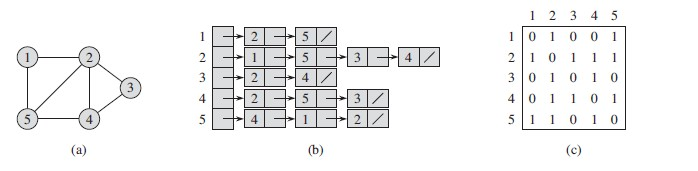

<!DOCTYPE html>


  


<html class="theme-next mist use-motion" lang="zh-Hans">
<head>
  <meta charset="UTF-8"/>
<meta http-equiv="X-UA-Compatible" content="IE=edge" />
<meta name="viewport" content="width=device-width, initial-scale=1, maximum-scale=1"/>
<meta name="theme-color" content="#222">


<meta http-equiv="Cache-Control" content="no-transform" />
<meta http-equiv="Cache-Control" content="no-siteapp" />


  <meta name="google-site-verification" content="tfZo1i97m_T6M5Rerj-Z2tCzNMlH8fq8JOMO75-Zkfc" />


  
  
  <link href="/lib/fancybox/source/jquery.fancybox.css?v=2.1.5" rel="stylesheet" type="text/css" />


  
  
  
  

  
    
    
  

  

  

  

  

  
    
    
    <link href="//fonts.googleapis.com/css?family=Lato:300,300italic,400,400italic,700,700italic&subset=latin,latin-ext" rel="stylesheet" type="text/css">
  


<link href="/lib/font-awesome/css/font-awesome.min.css?v=4.6.2" rel="stylesheet" type="text/css" />

<link href="/css/main.css?v=5.1.2" rel="stylesheet" type="text/css" />


  <meta name="keywords" content="算法|图," />


  <link rel="shortcut icon" type="image/x-icon" href="/favicon.ico?v=5.1.2" />


<meta name="description" content="图的表示图的定义图G定义为V和E的集合G={V, E}，其中V表示图中的所有的顶点集合，E表示的是G中的所有的边的集合。图按照E中的元素是否有方向，分为有向图和无向图。  图的表示方法上面给出的数学上图的定义，那么在计算机中如何表示图？通常意义上，有下面的两种方法：邻接表和邻接矩阵表示法。 无向图的邻接表和邻接矩阵表示如下所示： 有向图的邻接表和邻接矩阵表示如下所示： 根据上面的表示方法，下面定义">
<meta name="keywords" content="算法|图">
<meta property="og:type" content="article">
<meta property="og:title" content="有向图基本算法--遍历算法">
<meta property="og:url" content="http://kangqiao.github.io/2017/01/09/有向图基本算法-遍历算法/index.html">
<meta property="og:site_name" content="ZP 博客">
<meta property="og:description" content="图的表示图的定义图G定义为V和E的集合G={V, E}，其中V表示图中的所有的顶点集合，E表示的是G中的所有的边的集合。图按照E中的元素是否有方向，分为有向图和无向图。  图的表示方法上面给出的数学上图的定义，那么在计算机中如何表示图？通常意义上，有下面的两种方法：邻接表和邻接矩阵表示法。 无向图的邻接表和邻接矩阵表示如下所示： 有向图的邻接表和邻接矩阵表示如下所示： 根据上面的表示方法，下面定义">
<meta property="og:locale" content="zh-Hans">
<meta property="og:image" content="http://kangqiao.github.io/2017/01/09/有向图基本算法-遍历算法/undigraph.jpg">
<meta property="og:image" content="http://kangqiao.github.io/2017/01/09/有向图基本算法-遍历算法/digraph.jpg">
<meta property="og:image" content="http://kangqiao.github.io/2017/01/09/有向图基本算法-遍历算法/graph_datastructure.jpg">
<meta property="og:image" content="http://kangqiao.github.io/2017/01/09/有向图基本算法-遍历算法/digraph_algorithm.jpg">
<meta property="og:image" content="http://kangqiao.github.io/2017/01/09/有向图基本算法-遍历算法/digraph_algorithm2.jpg">
<meta property="og:updated_time" content="2017-10-09T08:02:58.000Z">
<meta name="twitter:card" content="summary">
<meta name="twitter:title" content="有向图基本算法--遍历算法">
<meta name="twitter:description" content="图的表示图的定义图G定义为V和E的集合G={V, E}，其中V表示图中的所有的顶点集合，E表示的是G中的所有的边的集合。图按照E中的元素是否有方向，分为有向图和无向图。  图的表示方法上面给出的数学上图的定义，那么在计算机中如何表示图？通常意义上，有下面的两种方法：邻接表和邻接矩阵表示法。 无向图的邻接表和邻接矩阵表示如下所示： 有向图的邻接表和邻接矩阵表示如下所示： 根据上面的表示方法，下面定义">
<meta name="twitter:image" content="http://kangqiao.github.io/2017/01/09/有向图基本算法-遍历算法/undigraph.jpg">


<script type="text/javascript" id="hexo.configurations">
  var NexT = window.NexT || {};
  var CONFIG = {
    root: '/',
    scheme: 'Mist',
    sidebar: {"position":"left","display":"post","offset":12,"offset_float":12,"b2t":false,"scrollpercent":false,"onmobile":false},
    fancybox: true,
    tabs: true,
    motion: true,
    duoshuo: {
      userId: '0',
      author: '博主'
    },
    algolia: {
      applicationID: '',
      apiKey: '',
      indexName: '',
      hits: {"per_page":10},
      labels: {"input_placeholder":"Search for Posts","hits_empty":"We didn't find any results for the search: ${query}","hits_stats":"${hits} results found in ${time} ms"}
    }
  };
</script>


  <link rel="canonical" href="http://kangqiao.github.io/2017/01/09/有向图基本算法-遍历算法/"/>


  <title>有向图基本算法--遍历算法 | ZP 博客</title>
  


</head>

<body itemscope itemtype="http://schema.org/WebPage" lang="zh-Hans">

  
  
    
  

  <div class="container sidebar-position-left page-post-detail ">
    <div class="headband"></div>

    <header id="header" class="header" itemscope itemtype="http://schema.org/WPHeader">
      <div class="header-inner"><div class="site-brand-wrapper">
  <div class="site-meta ">
    

    <div class="custom-logo-site-title">
      <a href="/"  class="brand" rel="start">
        <span class="logo-line-before"><i></i></span>
        <span class="site-title">ZP 博客</span>
        <span class="logo-line-after"><i></i></span>
      </a>
    </div>
      
        <p class="site-subtitle">kq</p>
      
  </div>

  <div class="site-nav-toggle">
    <button>
      <span class="btn-bar"></span>
      <span class="btn-bar"></span>
      <span class="btn-bar"></span>
    </button>
  </div>
</div>

<nav class="site-nav">
  

  
    <ul id="menu" class="menu">
      
        
        <li class="menu-item menu-item-home">
          <a href="/" rel="section">
            
              <i class="menu-item-icon fa fa-fw fa-home"></i> <br />
            
            首页
          </a>
        </li>
      
        
        <li class="menu-item menu-item-archives">
          <a href="/archives/" rel="section">
            
              <i class="menu-item-icon fa fa-fw fa-archive"></i> <br />
            
            归档
          </a>
        </li>
      
        
        <li class="menu-item menu-item-tags">
          <a href="/tags/" rel="section">
            
              <i class="menu-item-icon fa fa-fw fa-tags"></i> <br />
            
            标签
          </a>
        </li>
      
        
        <li class="menu-item menu-item-categories">
          <a href="/categories/" rel="section">
            
              <i class="menu-item-icon fa fa-fw fa-th"></i> <br />
            
            分类
          </a>
        </li>
      

      
        <li class="menu-item menu-item-search">
          
            <a href="javascript:;" class="popup-trigger">
          
            
              <i class="menu-item-icon fa fa-search fa-fw"></i> <br />
            
            搜索
          </a>
        </li>
      
    </ul>
  

  
    <div class="site-search">
      
  <div class="popup search-popup local-search-popup">
  <div class="local-search-header clearfix">
    <span class="search-icon">
      <i class="fa fa-search"></i>
    </span>
    <span class="popup-btn-close">
      <i class="fa fa-times-circle"></i>
    </span>
    <div class="local-search-input-wrapper">
      <input autocomplete="off"
             placeholder="搜索..." spellcheck="false"
             type="text" id="local-search-input">
    </div>
  </div>
  <div id="local-search-result"></div>
</div>


    </div>
  
</nav>


 </div>
    </header>

    <main id="main" class="main">
      <div class="main-inner">
        <div class="content-wrap">
          <div id="content" class="content">
            

  <div id="posts" class="posts-expand">
    

  

  
  
  

  <article class="post post-type-normal" itemscope itemtype="http://schema.org/Article">
  
  
  
  <div class="post-block">
    <link itemprop="mainEntityOfPage" href="http://kangqiao.github.io/2017/01/09/有向图基本算法-遍历算法/">

    <span hidden itemprop="author" itemscope itemtype="http://schema.org/Person">
      <meta itemprop="name" content="zhaopan">
      <meta itemprop="description" content="">
      <meta itemprop="image" content="https://avatars2.githubusercontent.com/u/7248615">
    </span>

    <span hidden itemprop="publisher" itemscope itemtype="http://schema.org/Organization">
      <meta itemprop="name" content="ZP 博客">
    </span>

    
      <header class="post-header">

        
        
          <h1 class="post-title" itemprop="name headline">有向图基本算法--遍历算法</h1>
        

        <div class="post-meta">
          <span class="post-time">
            
              <span class="post-meta-item-icon">
                <i class="fa fa-calendar-o"></i>
              </span>
              
                <span class="post-meta-item-text">发表于</span>
              
              <time title="创建于" itemprop="dateCreated datePublished" datetime="2017-01-09T15:38:22+08:00">
                2017-01-09
              </time>
            

            

            
          </span>

          

          
            
              <span class="post-comments-count">
                <span class="post-meta-divider">|</span>
                <span class="post-meta-item-icon">
                  <i class="fa fa-comment-o"></i>
                </span>
                <a href="/2017/01/09/有向图基本算法-遍历算法/#comments" itemprop="discussionUrl">
                  <span class="post-comments-count disqus-comment-count"
                        data-disqus-identifier="2017/01/09/有向图基本算法-遍历算法/" itemprop="commentCount"></span>
                </a>
              </span>
            
          

          
          

          

          

          

        </div>
      </header>
    

    
    
    
    <div class="post-body" itemprop="articleBody">

      
      

      
        <h3 id="图的表示"><a href="#图的表示" class="headerlink" title="图的表示"></a>图的表示</h3><h4 id="图的定义"><a href="#图的定义" class="headerlink" title="图的定义"></a>图的定义</h4><p>图G定义为V和E的集合G={V, E}，其中V表示图中的所有的顶点集合，E表示的是G中的所有的边的集合。图按照E中的元素是否有方向，分为有向图和无向图。 </p>
<h4 id="图的表示方法"><a href="#图的表示方法" class="headerlink" title="图的表示方法"></a>图的表示方法</h4><p>上面给出的数学上图的定义，那么在计算机中如何表示图？通常意义上，有下面的两种方法：邻接表和邻接矩阵表示法。</p>
<p>无向图的邻接表和邻接矩阵表示如下所示：<br></p>
<p>有向图的邻接表和邻接矩阵表示如下所示：<br></p>
<p>根据上面的表示方法，下面定义图G的这种数据结构（邻接表），首先定义图的顶点GraphVertex：<br><figure class="highlight plain"><table><tr><td class="gutter"><pre><div class="line">1</div><div class="line">2</div><div class="line">3</div><div class="line">4</div><div class="line">5</div><div class="line">6</div><div class="line">7</div><div class="line">8</div><div class="line">9</div><div class="line">10</div><div class="line">11</div><div class="line">12</div><div class="line">13</div><div class="line">14</div><div class="line">15</div><div class="line">16</div><div class="line">17</div><div class="line">18</div><div class="line">19</div></pre></td><td class="code"><pre><div class="line">// 顶点显示的符号</div><div class="line">public char Symbol &#123; get; set; &#125;</div><div class="line"></div><div class="line">// 顶点当前颜色</div><div class="line">public VertexColor Color &#123; get; set; &#125;</div><div class="line"></div><div class="line">// 顶点和开始节点之间的距离</div><div class="line">public int Distance &#123; get; set; &#125;</div><div class="line"></div><div class="line">// 广度遍历父节点</div><div class="line">public GraphVertex Parent &#123; get; set; &#125;</div><div class="line"></div><div class="line">// 深度优先搜索中的开始时间</div><div class="line">public int StartTime &#123; get; set; &#125;</div><div class="line"></div><div class="line">// 深度优先搜索中的结束时间</div><div class="line">public int FinishTime &#123; get; set; &#125;</div><div class="line">// 顶点对应的边</div><div class="line">public List&lt;GraphEdge&gt; FollowEdges &#123; get; set; &#125;</div></pre></td></tr></table></figure></p>
<p>定义图G的边的数据结构：<br><figure class="highlight plain"><table><tr><td class="gutter"><pre><div class="line">1</div><div class="line">2</div><div class="line">3</div><div class="line">4</div><div class="line">5</div><div class="line">6</div></pre></td><td class="code"><pre><div class="line">// 边开始顶点，在邻接表的存储中其实没有必要存储</div><div class="line">public GraphVertex From &#123; get; set; &#125;</div><div class="line">// 结束顶点</div><div class="line">public GraphVertex To &#123; get; set; &#125; </div><div class="line">// 边权重</div><div class="line">public int Weight &#123; get; set; &#125;</div></pre></td></tr></table></figure></p>
<p>定义图：<br><figure class="highlight plain"><table><tr><td class="gutter"><pre><div class="line">1</div><div class="line">2</div><div class="line">3</div></pre></td><td class="code"><pre><div class="line">// 数据成员，这里假设的是顶点的symbol是各个不相同的</div><div class="line">private Hashtable graph = new Hashtable();</div><div class="line">private int time = 0;</div></pre></td></tr></table></figure></p>
<p>整体上的结构如下：<br></p>
<h3 id="有向图的深度优先算法"><a href="#有向图的深度优先算法" class="headerlink" title="有向图的深度优先算法"></a>有向图的深度优先算法</h3><h4 id="基本算法"><a href="#基本算法" class="headerlink" title="基本算法"></a>基本算法</h4><p>其中d表明的是某个节点第一次被发现的时间点，f表明从节点出发的全部节点已经被发现的时间。<br></p>
<h4 id="设计实现"><a href="#设计实现" class="headerlink" title="设计实现"></a>设计实现</h4><figure class="highlight plain"><table><tr><td class="gutter"><pre><div class="line">1</div><div class="line">2</div><div class="line">3</div><div class="line">4</div><div class="line">5</div><div class="line">6</div><div class="line">7</div><div class="line">8</div><div class="line">9</div><div class="line">10</div><div class="line">11</div><div class="line">12</div><div class="line">13</div><div class="line">14</div><div class="line">15</div><div class="line">16</div><div class="line">17</div><div class="line">18</div><div class="line">19</div><div class="line">20</div><div class="line">21</div><div class="line">22</div><div class="line">23</div><div class="line">24</div><div class="line">25</div><div class="line">26</div><div class="line">27</div><div class="line">28</div><div class="line">29</div><div class="line">30</div><div class="line">31</div><div class="line">32</div><div class="line">33</div><div class="line">34</div><div class="line">35</div><div class="line">36</div><div class="line">37</div><div class="line">38</div><div class="line">39</div><div class="line">40</div><div class="line">41</div><div class="line">42</div><div class="line">43</div><div class="line">44</div><div class="line">45</div><div class="line">46</div><div class="line">47</div><div class="line">48</div><div class="line">49</div></pre></td><td class="code"><pre><div class="line">// 深度优先遍历算法</div><div class="line">public void DepthFirstVisit(GraphVertex v)</div><div class="line">&#123;</div><div class="line">    // 刚刚被发现，颜色为gray</div><div class="line">    Console.WriteLine(v.Symbol);</div><div class="line">    v.Color = VertexColor.GRAY;</div><div class="line">    this.time++;</div><div class="line">    // 开始时间</div><div class="line">    v.StartTime = this.time;</div><div class="line">    foreach (GraphEdge edge in v.FollowEdges)</div><div class="line">    &#123;</div><div class="line">        // 还未被发现</div><div class="line">        if (edge.To.Color == VertexColor.WHITE)</div><div class="line">        &#123;</div><div class="line">            edge.To.Parent = v;</div><div class="line">            DepthFirstVisit(edge.To);</div><div class="line">        &#125;</div><div class="line">    &#125;</div><div class="line">    </div><div class="line">    // 如果边都已经发现完成</div><div class="line">    v.Color = VertexColor.BLACK;</div><div class="line">    this.time++;</div><div class="line">    v.FinishTime = this.time;</div><div class="line">    </div><div class="line">&#125;</div><div class="line">public void DepthFirstTravel()</div><div class="line">&#123;</div><div class="line">    // 全局时间变量</div><div class="line">    this.time = 0;</div><div class="line">    // 初始化</div><div class="line">    GraphVertex v;</div><div class="line">    foreach (DictionaryEntry e in this.graph)</div><div class="line">    &#123;</div><div class="line">        v = (GraphVertex)e.Value;</div><div class="line">        v.Color = VertexColor.WHITE;</div><div class="line">        v.Parent = null;</div><div class="line">    &#125;</div><div class="line">    // 递归调用</div><div class="line">    // 队所有的顶点</div><div class="line">    foreach (DictionaryEntry e in this.graph)</div><div class="line">    &#123;</div><div class="line">        v = (GraphVertex)e.Value;</div><div class="line">        // 顶点为白色</div><div class="line">        if (v.Color == VertexColor.WHITE)</div><div class="line">        &#123;</div><div class="line">            DepthFirstVisit(v);</div><div class="line">        &#125;</div><div class="line">    &#125;</div><div class="line">&#125;</div></pre></td></tr></table></figure>
<h3 id="有向图的遍历算法：广度优先"><a href="#有向图的遍历算法：广度优先" class="headerlink" title="有向图的遍历算法：广度优先"></a>有向图的遍历算法：广度优先</h3><h4 id="基本算法-1"><a href="#基本算法-1" class="headerlink" title="基本算法"></a>基本算法</h4><p>其中color域表示的是当前某个节点被发现的状态。如果是white表明没有被发现，gray表示当前顶点已经被发现，但是从该节点出发的节点还没有被全部发现。parent域定义的是在搜索算法时父节点。distance域表明的是从节点s到某个发现的节点v的路径距离。<br></p>
<h4 id="设计实现-1"><a href="#设计实现-1" class="headerlink" title="设计实现"></a>设计实现</h4><figure class="highlight plain"><table><tr><td class="gutter"><pre><div class="line">1</div><div class="line">2</div><div class="line">3</div><div class="line">4</div><div class="line">5</div><div class="line">6</div><div class="line">7</div><div class="line">8</div><div class="line">9</div><div class="line">10</div><div class="line">11</div><div class="line">12</div><div class="line">13</div><div class="line">14</div><div class="line">15</div><div class="line">16</div><div class="line">17</div><div class="line">18</div><div class="line">19</div><div class="line">20</div><div class="line">21</div><div class="line">22</div><div class="line">23</div><div class="line">24</div><div class="line">25</div><div class="line">26</div><div class="line">27</div><div class="line">28</div><div class="line">29</div><div class="line">30</div><div class="line">31</div><div class="line">32</div><div class="line">33</div><div class="line">34</div><div class="line">35</div><div class="line">36</div><div class="line">37</div><div class="line">38</div><div class="line">39</div><div class="line">40</div></pre></td><td class="code"><pre><div class="line">// 广度优先遍历算法，同时生成广度优先树</div><div class="line">public void BreadthFirstTravel(GraphVertex s)</div><div class="line">&#123;</div><div class="line">    // 初始化所有节点</div><div class="line">    GraphVertex v;</div><div class="line">    foreach (DictionaryEntry e in this.graph)</div><div class="line">    &#123;</div><div class="line">        v = (GraphVertex)e.Value;</div><div class="line">        v.Color = VertexColor.WHITE;</div><div class="line">        v.Distance = int.MaxValue;</div><div class="line">        v.Parent = null;</div><div class="line">    &#125;</div><div class="line">    // 发现第一个节点</div><div class="line">    s.Color = VertexColor.GRAY;</div><div class="line">    s.Distance = 0;</div><div class="line">    s.Parent = null;</div><div class="line">    // 初始化队列</div><div class="line">    Queue context = </div><div class="line">        new Queue();</div><div class="line">    context.Enqueue(s);</div><div class="line">    // 如果队列不空的话</div><div class="line">    while (context.Count != 0)</div><div class="line">    &#123;</div><div class="line">        // 队首元素出队</div><div class="line">        v = context.Dequeue() as GraphVertex;</div><div class="line">        Console.WriteLine(v.Symbol);</div><div class="line">        // 遍历v的节点</div><div class="line">        foreach (GraphEdge item in v.FollowEdges)</div><div class="line">        &#123;</div><div class="line">            if ( item.To.Color == VertexColor.WHITE)</div><div class="line">            &#123;</div><div class="line">                item.To.Color = VertexColor.GRAY;</div><div class="line">                item.To.Distance = v.Distance + 1;</div><div class="line">                item.To.Parent = v;</div><div class="line">                context.Enqueue(item.To);</div><div class="line">            &#125;</div><div class="line">        &#125;</div><div class="line">        v.Color = VertexColor.BLACK;</div><div class="line">    &#125;</div><div class="line">&#125;</div></pre></td></tr></table></figure>
<p><em> 上面的搜索代码结构是比较典型的搜索结构：首先定义队列或者是栈来保存程序运行状态，如果容器不空，取出元素，然后对取出的元素做一些处理。 </em></p>
<h3 id="参考"><a href="#参考" class="headerlink" title="参考"></a>参考</h3><ul>
<li><a href="http://www.cnblogs.com/xuqiang/archive/2011/03/28/1997680.html" target="_blank" rel="external">有向图基本算法–遍历算法</a></li>
<li><a href="https://zh.wikipedia.org/wiki/%E5%9B%BE_(%E6%95%B0%E5%AD%A6" target="_blank" rel="external">https://zh.wikipedia.org/wiki/%E5%9B%BE_(%E6%95%B0%E5%AD%A6</a>)</li>
</ul>

      
    </div>
    
    
    

    

    

    

    <footer class="post-footer">
      
        <div class="post-tags">
          
            <a href="/tags/算法-图/" rel="tag"># 算法|图</a>
          
        </div>
      

      
      
      

      
        <div class="post-nav">
          <div class="post-nav-next post-nav-item">
            
          </div>

          <span class="post-nav-divider"></span>

          <div class="post-nav-prev post-nav-item">
            
              <a href="/2017/01/26/hexo指南/" rel="prev" title="hexo指南">
                hexo指南 <i class="fa fa-chevron-right"></i>
              </a>
            
          </div>
        </div>
      

      
      
    </footer>
  </div>
  
  
  
  </article>


    <div class="post-spread">
      
        <!-- JiaThis Button BEGIN -->
<div class="jiathis_style">
  <a class="jiathis_button_tsina"></a>
  <a class="jiathis_button_tqq"></a>
  <a class="jiathis_button_weixin"></a>
  <a class="jiathis_button_cqq"></a>
  <a class="jiathis_button_douban"></a>
  <a class="jiathis_button_renren"></a>
  <a class="jiathis_button_qzone"></a>
  <a class="jiathis_button_kaixin001"></a>
  <a class="jiathis_button_copy"></a>
  <a href="http://www.jiathis.com/share" class="jiathis jiathis_txt jiathis_separator jtico jtico_jiathis" target="_blank"></a>
  <a class="jiathis_counter_style"></a>
</div>
<script type="text/javascript" >
  var jiathis_config={
    hideMore:false
  }
</script>
<script type="text/javascript" src="http://v3.jiathis.com/code/jia.js" charset="utf-8"></script>
<!-- JiaThis Button END -->

      
    </div>
  </div>


          </div>
          


          
  <div class="comments" id="comments">
    
      <div id="disqus_thread">
        <noscript>
          Please enable JavaScript to view the
          <a href="https://disqus.com/?ref_noscript">comments powered by Disqus.</a>
        </noscript>
      </div>
    
  </div>


        </div>
        
          
  
  <div class="sidebar-toggle">
    <div class="sidebar-toggle-line-wrap">
      <span class="sidebar-toggle-line sidebar-toggle-line-first"></span>
      <span class="sidebar-toggle-line sidebar-toggle-line-middle"></span>
      <span class="sidebar-toggle-line sidebar-toggle-line-last"></span>
    </div>
  </div>

  <aside id="sidebar" class="sidebar">
    
    <div class="sidebar-inner">

      

      
        <ul class="sidebar-nav motion-element">
          <li class="sidebar-nav-toc sidebar-nav-active" data-target="post-toc-wrap" >
            文章目录
          </li>
          <li class="sidebar-nav-overview" data-target="site-overview">
            站点概览
          </li>
        </ul>
      

      <section class="site-overview sidebar-panel">
        <div class="site-author motion-element" itemprop="author" itemscope itemtype="http://schema.org/Person">
          
          <p class="site-author-name" itemprop="name">zhaopan</p>
           
              <p class="site-description motion-element" itemprop="description">zp</p>
          
        </div>
        <nav class="site-state motion-element">

          
            <div class="site-state-item site-state-posts">
              <a href="/archives/">
                <span class="site-state-item-count">3</span>
                <span class="site-state-item-name">日志</span>
              </a>
            </div>
          

          

          
            
            
            <div class="site-state-item site-state-tags">
              
                <span class="site-state-item-count">4</span>
                <span class="site-state-item-name">标签</span>
              
            </div>
          

        </nav>

        

        <div class="links-of-author motion-element">
          
        </div>

        
        

        
        

        


      </section>

      
      <!--noindex-->
        <section class="post-toc-wrap motion-element sidebar-panel sidebar-panel-active">
          <div class="post-toc">

            
              
            

            
              <div class="post-toc-content"><ol class="nav"><li class="nav-item nav-level-3"><a class="nav-link" href="#图的表示"><span class="nav-number">1.</span> <span class="nav-text">图的表示</span></a><ol class="nav-child"><li class="nav-item nav-level-4"><a class="nav-link" href="#图的定义"><span class="nav-number">1.1.</span> <span class="nav-text">图的定义</span></a></li><li class="nav-item nav-level-4"><a class="nav-link" href="#图的表示方法"><span class="nav-number">1.2.</span> <span class="nav-text">图的表示方法</span></a></li></ol></li><li class="nav-item nav-level-3"><a class="nav-link" href="#有向图的深度优先算法"><span class="nav-number">2.</span> <span class="nav-text">有向图的深度优先算法</span></a><ol class="nav-child"><li class="nav-item nav-level-4"><a class="nav-link" href="#基本算法"><span class="nav-number">2.1.</span> <span class="nav-text">基本算法</span></a></li><li class="nav-item nav-level-4"><a class="nav-link" href="#设计实现"><span class="nav-number">2.2.</span> <span class="nav-text">设计实现</span></a></li></ol></li><li class="nav-item nav-level-3"><a class="nav-link" href="#有向图的遍历算法：广度优先"><span class="nav-number">3.</span> <span class="nav-text">有向图的遍历算法：广度优先</span></a><ol class="nav-child"><li class="nav-item nav-level-4"><a class="nav-link" href="#基本算法-1"><span class="nav-number">3.1.</span> <span class="nav-text">基本算法</span></a></li><li class="nav-item nav-level-4"><a class="nav-link" href="#设计实现-1"><span class="nav-number">3.2.</span> <span class="nav-text">设计实现</span></a></li></ol></li><li class="nav-item nav-level-3"><a class="nav-link" href="#参考"><span class="nav-number">4.</span> <span class="nav-text">参考</span></a></li></ol></div>
            

          </div>
        </section>
      <!--/noindex-->
      

      

    </div>
  </aside>


        
      </div>
    </main>

    <footer id="footer" class="footer">
      <div class="footer-inner">
        <div class="copyright" >
  
  &copy; 
  <span itemprop="copyrightYear">2017</span>
  <span class="with-love">
    <i class="fa fa-heart"></i>
  </span>
  <span class="author" itemprop="copyrightHolder">zhaopan</span>
</div>


<div class="powered-by">
  由 <a class="theme-link" href="https://hexo.io">Hexo</a> 强力驱动
</div>

<div class="theme-info">
  主题 -
  <a class="theme-link" href="https://github.com/iissnan/hexo-theme-next">
    NexT.Mist
  </a>
</div>


        

        
      </div>
    </footer>

    
      <div class="back-to-top">
        <i class="fa fa-arrow-up"></i>
        
      </div>
    

  </div>

  

<script type="text/javascript">
  if (Object.prototype.toString.call(window.Promise) !== '[object Function]') {
    window.Promise = null;
  }
</script>


  


  
  <script type="text/javascript" src="/lib/jquery/index.js?v=2.1.3"></script>

  
  <script type="text/javascript" src="/lib/fastclick/lib/fastclick.min.js?v=1.0.6"></script>

  
  <script type="text/javascript" src="/lib/jquery_lazyload/jquery.lazyload.js?v=1.9.7"></script>

  
  <script type="text/javascript" src="/lib/velocity/velocity.min.js?v=1.2.1"></script>

  
  <script type="text/javascript" src="/lib/velocity/velocity.ui.min.js?v=1.2.1"></script>

  
  <script type="text/javascript" src="/lib/fancybox/source/jquery.fancybox.pack.js?v=2.1.5"></script>


  


  <script type="text/javascript" src="/js/src/utils.js?v=5.1.2"></script>

  <script type="text/javascript" src="/js/src/motion.js?v=5.1.2"></script>


  
  

  
  <script type="text/javascript" src="/js/src/scrollspy.js?v=5.1.2"></script>
<script type="text/javascript" src="/js/src/post-details.js?v=5.1.2"></script>


  


  <script type="text/javascript" src="/js/src/bootstrap.js?v=5.1.2"></script>


  


  

    
      <script id="dsq-count-scr" src="https://zhaopan.disqus.com/count.js" async></script>
    

    
      <script type="text/javascript">
        var disqus_config = function () {
          this.page.url = 'http://kangqiao.github.io/2017/01/09/有向图基本算法-遍历算法/';
          this.page.identifier = '2017/01/09/有向图基本算法-遍历算法/';
          this.page.title = '有向图基本算法--遍历算法';
        };
        var d = document, s = d.createElement('script');
        s.src = 'https://zhaopan.disqus.com/embed.js';
        s.setAttribute('data-timestamp', '' + +new Date());
        (d.head || d.body).appendChild(s);
      </script>
    

  


	


  


  

  <script type="text/javascript">
    // Popup Window;
    var isfetched = false;
    var isXml = true;
    // Search DB path;
    var search_path = "search.xml";
    if (search_path.length === 0) {
      search_path = "search.xml";
    } else if (/json$/i.test(search_path)) {
      isXml = false;
    }
    var path = "/" + search_path;
    // monitor main search box;

    var onPopupClose = function (e) {
      $('.popup').hide();
      $('#local-search-input').val('');
      $('.search-result-list').remove();
      $('#no-result').remove();
      $(".local-search-pop-overlay").remove();
      $('body').css('overflow', '');
    }

    function proceedsearch() {
      $("body")
        .append('<div class="search-popup-overlay local-search-pop-overlay"></div>')
        .css('overflow', 'hidden');
      $('.search-popup-overlay').click(onPopupClose);
      $('.popup').toggle();
      var $localSearchInput = $('#local-search-input');
      $localSearchInput.attr("autocapitalize", "none");
      $localSearchInput.attr("autocorrect", "off");
      $localSearchInput.focus();
    }

    // search function;
    var searchFunc = function(path, search_id, content_id) {
      'use strict';

      // start loading animation
      $("body")
        .append('<div class="search-popup-overlay local-search-pop-overlay">' +
          '<div id="search-loading-icon">' +
          '<i class="fa fa-spinner fa-pulse fa-5x fa-fw"></i>' +
          '</div>' +
          '</div>')
        .css('overflow', 'hidden');
      $("#search-loading-icon").css('margin', '20% auto 0 auto').css('text-align', 'center');

      $.ajax({
        url: path,
        dataType: isXml ? "xml" : "json",
        async: true,
        success: function(res) {
          // get the contents from search data
          isfetched = true;
          $('.popup').detach().appendTo('.header-inner');
          var datas = isXml ? $("entry", res).map(function() {
            return {
              title: $("title", this).text(),
              content: $("content",this).text(),
              url: $("url" , this).text()
            };
          }).get() : res;
          var input = document.getElementById(search_id);
          var resultContent = document.getElementById(content_id);
          var inputEventFunction = function() {
            var searchText = input.value.trim().toLowerCase();
            var keywords = searchText.split(/[\s\-]+/);
            if (keywords.length > 1) {
              keywords.push(searchText);
            }
            var resultItems = [];
            if (searchText.length > 0) {
              // perform local searching
              datas.forEach(function(data) {
                var isMatch = false;
                var hitCount = 0;
                var searchTextCount = 0;
                var title = data.title.trim();
                var titleInLowerCase = title.toLowerCase();
                var content = data.content.trim().replace(/<[^>]+>/g,"");
                var contentInLowerCase = content.toLowerCase();
                var articleUrl = decodeURIComponent(data.url);
                var indexOfTitle = [];
                var indexOfContent = [];
                // only match articles with not empty titles
                if(title != '') {
                  keywords.forEach(function(keyword) {
                    function getIndexByWord(word, text, caseSensitive) {
                      var wordLen = word.length;
                      if (wordLen === 0) {
                        return [];
                      }
                      var startPosition = 0, position = [], index = [];
                      if (!caseSensitive) {
                        text = text.toLowerCase();
                        word = word.toLowerCase();
                      }
                      while ((position = text.indexOf(word, startPosition)) > -1) {
                        index.push({position: position, word: word});
                        startPosition = position + wordLen;
                      }
                      return index;
                    }

                    indexOfTitle = indexOfTitle.concat(getIndexByWord(keyword, titleInLowerCase, false));
                    indexOfContent = indexOfContent.concat(getIndexByWord(keyword, contentInLowerCase, false));
                  });
                  if (indexOfTitle.length > 0 || indexOfContent.length > 0) {
                    isMatch = true;
                    hitCount = indexOfTitle.length + indexOfContent.length;
                  }
                }

                // show search results

                if (isMatch) {
                  // sort index by position of keyword

                  [indexOfTitle, indexOfContent].forEach(function (index) {
                    index.sort(function (itemLeft, itemRight) {
                      if (itemRight.position !== itemLeft.position) {
                        return itemRight.position - itemLeft.position;
                      } else {
                        return itemLeft.word.length - itemRight.word.length;
                      }
                    });
                  });

                  // merge hits into slices

                  function mergeIntoSlice(text, start, end, index) {
                    var item = index[index.length - 1];
                    var position = item.position;
                    var word = item.word;
                    var hits = [];
                    var searchTextCountInSlice = 0;
                    while (position + word.length <= end && index.length != 0) {
                      if (word === searchText) {
                        searchTextCountInSlice++;
                      }
                      hits.push({position: position, length: word.length});
                      var wordEnd = position + word.length;

                      // move to next position of hit

                      index.pop();
                      while (index.length != 0) {
                        item = index[index.length - 1];
                        position = item.position;
                        word = item.word;
                        if (wordEnd > position) {
                          index.pop();
                        } else {
                          break;
                        }
                      }
                    }
                    searchTextCount += searchTextCountInSlice;
                    return {
                      hits: hits,
                      start: start,
                      end: end,
                      searchTextCount: searchTextCountInSlice
                    };
                  }

                  var slicesOfTitle = [];
                  if (indexOfTitle.length != 0) {
                    slicesOfTitle.push(mergeIntoSlice(title, 0, title.length, indexOfTitle));
                  }

                  var slicesOfContent = [];
                  while (indexOfContent.length != 0) {
                    var item = indexOfContent[indexOfContent.length - 1];
                    var position = item.position;
                    var word = item.word;
                    // cut out 100 characters
                    var start = position - 20;
                    var end = position + 80;
                    if(start < 0){
                      start = 0;
                    }
                    if (end < position + word.length) {
                      end = position + word.length;
                    }
                    if(end > content.length){
                      end = content.length;
                    }
                    slicesOfContent.push(mergeIntoSlice(content, start, end, indexOfContent));
                  }

                  // sort slices in content by search text's count and hits' count

                  slicesOfContent.sort(function (sliceLeft, sliceRight) {
                    if (sliceLeft.searchTextCount !== sliceRight.searchTextCount) {
                      return sliceRight.searchTextCount - sliceLeft.searchTextCount;
                    } else if (sliceLeft.hits.length !== sliceRight.hits.length) {
                      return sliceRight.hits.length - sliceLeft.hits.length;
                    } else {
                      return sliceLeft.start - sliceRight.start;
                    }
                  });

                  // select top N slices in content

                  var upperBound = parseInt('1');
                  if (upperBound >= 0) {
                    slicesOfContent = slicesOfContent.slice(0, upperBound);
                  }

                  // highlight title and content

                  function highlightKeyword(text, slice) {
                    var result = '';
                    var prevEnd = slice.start;
                    slice.hits.forEach(function (hit) {
                      result += text.substring(prevEnd, hit.position);
                      var end = hit.position + hit.length;
                      result += '<b class="search-keyword">' + text.substring(hit.position, end) + '</b>';
                      prevEnd = end;
                    });
                    result += text.substring(prevEnd, slice.end);
                    return result;
                  }

                  var resultItem = '';

                  if (slicesOfTitle.length != 0) {
                    resultItem += "<li><a href='" + articleUrl + "' class='search-result-title'>" + highlightKeyword(title, slicesOfTitle[0]) + "</a>";
                  } else {
                    resultItem += "<li><a href='" + articleUrl + "' class='search-result-title'>" + title + "</a>";
                  }

                  slicesOfContent.forEach(function (slice) {
                    resultItem += "<a href='" + articleUrl + "'>" +
                      "<p class=\"search-result\">" + highlightKeyword(content, slice) +
                      "...</p>" + "</a>";
                  });

                  resultItem += "</li>";
                  resultItems.push({
                    item: resultItem,
                    searchTextCount: searchTextCount,
                    hitCount: hitCount,
                    id: resultItems.length
                  });
                }
              })
            };
            if (keywords.length === 1 && keywords[0] === "") {
              resultContent.innerHTML = '<div id="no-result"><i class="fa fa-search fa-5x" /></div>'
            } else if (resultItems.length === 0) {
              resultContent.innerHTML = '<div id="no-result"><i class="fa fa-frown-o fa-5x" /></div>'
            } else {
              resultItems.sort(function (resultLeft, resultRight) {
                if (resultLeft.searchTextCount !== resultRight.searchTextCount) {
                  return resultRight.searchTextCount - resultLeft.searchTextCount;
                } else if (resultLeft.hitCount !== resultRight.hitCount) {
                  return resultRight.hitCount - resultLeft.hitCount;
                } else {
                  return resultRight.id - resultLeft.id;
                }
              });
              var searchResultList = '<ul class=\"search-result-list\">';
              resultItems.forEach(function (result) {
                searchResultList += result.item;
              })
              searchResultList += "</ul>";
              resultContent.innerHTML = searchResultList;
            }
          }

          if ('auto' === 'auto') {
            input.addEventListener('input', inputEventFunction);
          } else {
            $('.search-icon').click(inputEventFunction);
            input.addEventListener('keypress', function (event) {
              if (event.keyCode === 13) {
                inputEventFunction();
              }
            });
          }

          // remove loading animation
          $(".local-search-pop-overlay").remove();
          $('body').css('overflow', '');

          proceedsearch();
        }
      });
    }

    // handle and trigger popup window;
    $('.popup-trigger').click(function(e) {
      e.stopPropagation();
      if (isfetched === false) {
        searchFunc(path, 'local-search-input', 'local-search-result');
      } else {
        proceedsearch();
      };
    });

    $('.popup-btn-close').click(onPopupClose);
    $('.popup').click(function(e){
      e.stopPropagation();
    });
    $(document).on('keyup', function (event) {
      var shouldDismissSearchPopup = event.which === 27 &&
        $('.search-popup').is(':visible');
      if (shouldDismissSearchPopup) {
        onPopupClose();
      }
    });
  </script>


  

  

  

  

  

  

</body>
</html>
